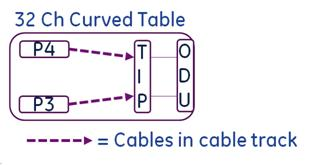
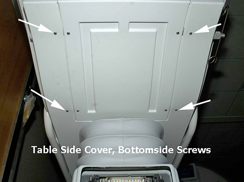
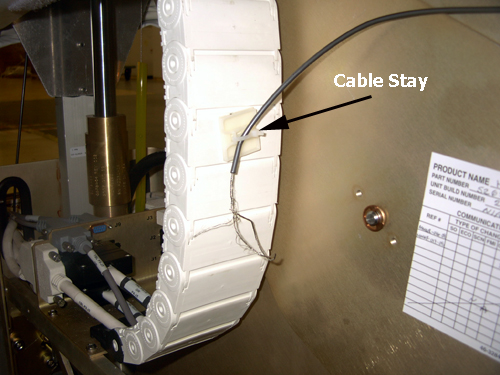

- 00000018WIA30200130GYZ
- id_123739271.33
- May 16, 2025 4:49:54 PM
Replacing the patient table cable take-up and multiplexer box
Removes the patient table cable take-up and installs a replacement.
Prerequisites
| Personnel requirements | |||
|---|---|---|---|
| Required persons | Preliminary requirements | Procedure | Finalization |
| 1 | - | 120 minutes for any non-GEM cable track; 120 minutes for P3 ODU to multiplexer; 400 minutes for PA to multiplexer; 220 minutes for P2 or P4 | - |
| Tools and test equipment | |||
|---|---|---|---|
| Item | Quantity | Part number | Manufacturer |
| Phillips screwdriver | 1 | - | - |
| Flat head screwdriver | 1 | - | - |
| Standard Allen wrench set | 1 | - | - |
| Small flat head screwdriver with long shaft | 1 | - | - |
| Pliers | 1 | - | - |
| 5 x 10 x 25 cm (2 x 4 x 10 inches) block of wood (or similar non-ferrous material) | 2 | - | - |
| Standard wrench set | 1 | - | - |
| Non-ferrous Phillips screwdriver | 1 | - | - |
| MCRv Tool Kit 1.5T | 1 of any tool kit | 5182417 or 5182417-5 or 5182417-6 | - |
| Consumables | |||
|---|---|---|---|
| Item | Quantity | Part number | Manufacturer |
| LOCTITE #242 | 0.5 cc | 46-170686P1 | - |
| Material handling gloves | 1 pair | - | - |
| Replacement parts | |||
|---|---|---|---|
| Item | Quantity | Part number | Manufacturer |
| 1.5T Table Cable Track (TIP to P3 or P4) | 1 | See FRU Manual | - |
| Safety | ||||
|---|---|---|---|---|
|
Before working in any GE HealthCare MR suite or doing any GE HealthCare service procedure, you must:
If you have any safety concerns at any time, do not begin work or immediately stop work and move to a safe location. Immediately contact your supervisor or site safety officer for instructions on how to proceed. | ||||
| ||||
| ||||
About this task
The 32-channel curved table has P3 and P4 port connectors in the table.
This procedure describes the replacement of the patient table cable take-up from the P-port connection to the table interface plate (TIP).

This instruction contains the following procedures:
Removing patient table cable take-up for 32-channel curved table
Procedure
- Lower the table lock safety bar, then lower the table and verify that its weight is resting on the safety bar.
Figure 3. Table lock safety bar 
- Remove the bottom front cover (located on the front underside of the patient table) and the right or left table side cover, depending on which cable track is being removed.Note
When standing at the foot of the patient table facing the magnet, the P3 cable take-up is on the right side and P4 cable take-up is on the left side.
Figure 4. Bottom front cover 
Figure 5. Bottom screws on table side cover 
- Disconnect the gray TBL P3-J7 or P4-J7 cable from the Touch and Go connector located in the upper left or right corner inside the table top.
Figure 6. Touch and go connector 
- Prop up the rear of the cradle using two blocks of wood or similar non-ferrous material, each approximately 10 in (25 cm) long.
Figure 8. Cradle removal 
- Depending on which take-up being replaced, go to the left or right side of the front lower table chassis and disconnect all take-up connectors from the rear side of the TIP.Note
Standing at rear of the table, the right side is the P3 cable take-up, and the left side is the P4 cable take-up. To make accessing the P4 connectors on the TIP easier, remove the 3/8 inch nut and washer from the front and rear of upper chassis rail.
Figure 9. Right side view of TIP connectors 
Figure 10. Removing left side upper chassis rail  Note
NoteBe careful with the J1/J2 and J4/J5 black connectors. They use small, standard head screws that are made of lightweight aluminum and can be easily stripped.
Figure 11. Using long shaft screwdriver 
To remove the main cradle latch cable, which is threaded through the P4 take-up track, do the following:Notice - Use a 5/64 Allen wrench to loosen the set screw at the down link clevis, then unthread the cable.
Figure 12. Main cradle latch cable path and down link clevis 
- Pull cable through to clear the back side of the cable track and underside of cable take-up lead.
Figure 13. Path of main cradle latch cable behind P4 cable track 
- Use a 5/64 Allen wrench to loosen the set screw at the down link clevis, then unthread the cable.
- Remove both cable track end screws from the TIP connector.
Figure 14. Cable track end screws 
- Remove the two slotted brass screws from the cable take-up lead in the cable well.
Figure 16. Take-up end screws in table top 
- Pull the rear of the cable take-up, lay it out in the front of the patient table to expose the cover plate and screws, and remove both screws.
Figure 17. Cover plate 
Replacing patient table cable take-up for 32-channel curved table
Procedure
Finalization
Finalization
-
Dock the patient table.
-
Confirm that the cradle release functions properly.
-
Confirm that the LPCA connects to the cradle and the cradle moves into the bore.